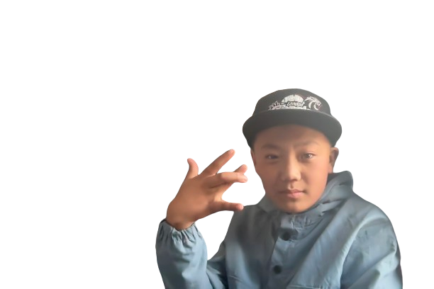

Robbin Gurung
2068/04/18
About Me
Greetings! I am Robin Gurung, a dedicated Rapper born on Shrawan 18th, 2068. My journey into the realm of audio storytelling has been fueled by a passion for transforming raw lyrics into compelling narratives that captivate audiences.
Rap
ya ya. sabda sojha ho hamro mama ho... jo hoo kailash mama
ya ya
sabai banda man naprna bhanako ma dai ho
yayayay,......
sabai bhanda padandas ho jo ho samir kaka ho
maila man pardainw doodh kina bhnaya tes huncha tarrr
yayayay.....